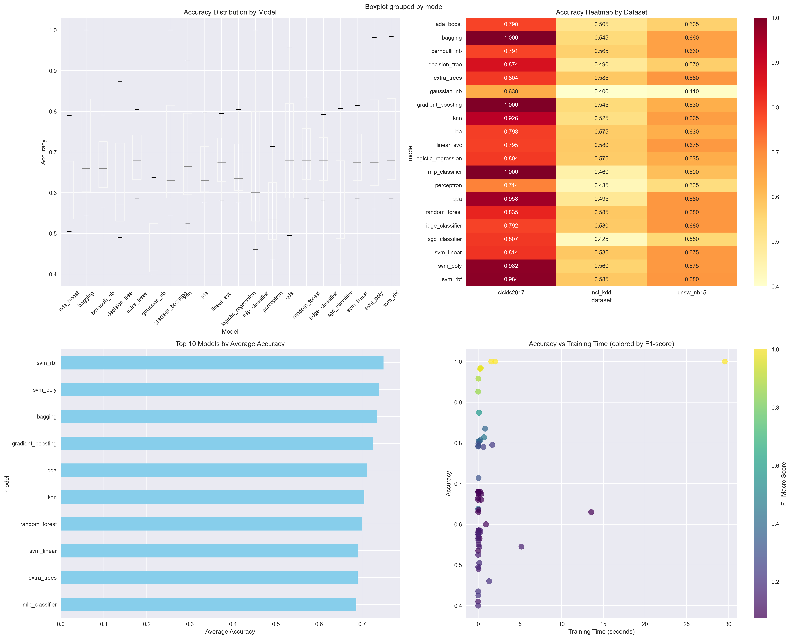
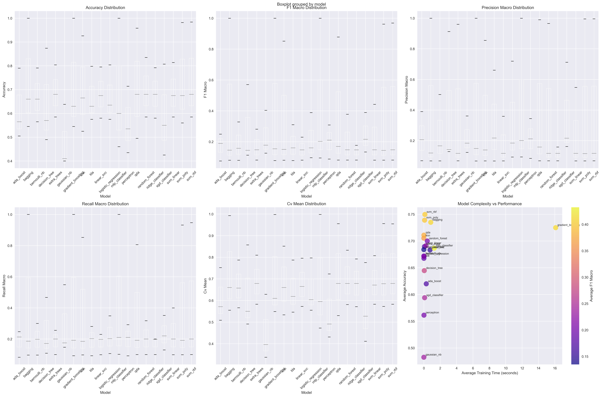
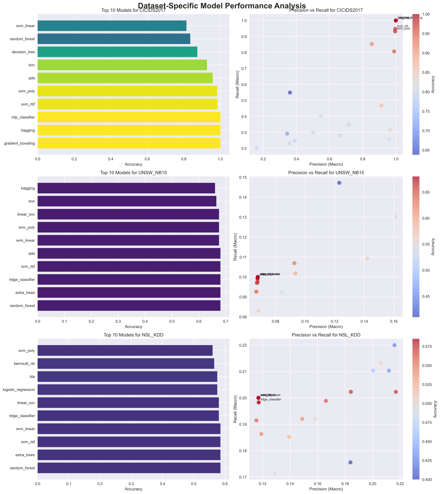
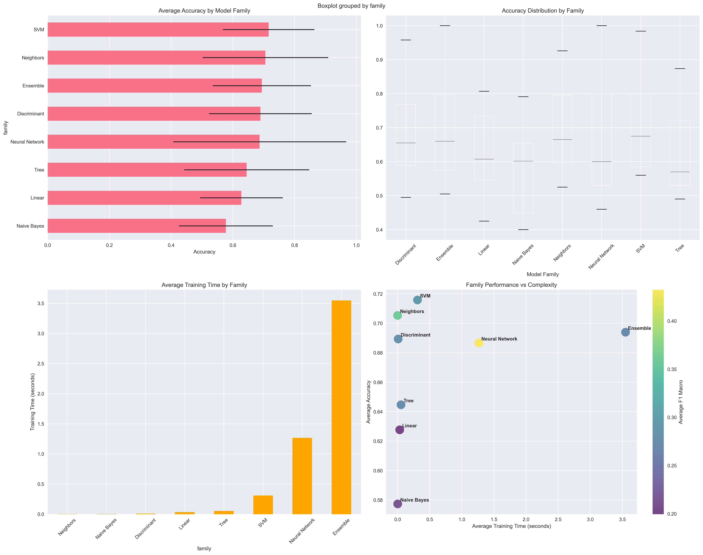

🤖 ML-IDS-IPS Comprehensive Model Comparison Dashboard
🏆 Top 10 Models by Average Accuracy
1. Svm Rbf
0.7497
2. Svm Poly
0.7390
3. Bagging
0.7350
4. Gradient Boosting
0.7250
5. Qda
0.7110
6. Knn
0.7053
7. Random Forest
0.7000
8. Svm Linear
0.6913
9. Extra Trees
0.6897
10. Mlp Classifier
0.6867
🎯 Best Model per Dataset
CICIDS2017: Gradient Boosting
1.0000
NSL_KDD: Random Forest
0.5850
UNSW_NB15: Random Forest
0.6800
📊 Performance Visualizations
Accuracy Comparison

Performance Metrics

Dataset-Specific Analysis

Model Family Comparison

📋 Detailed Reports